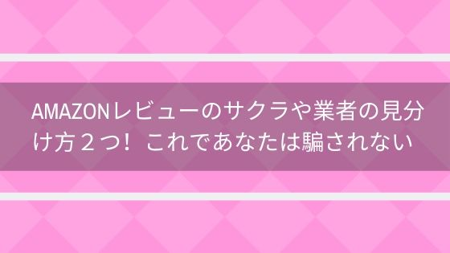
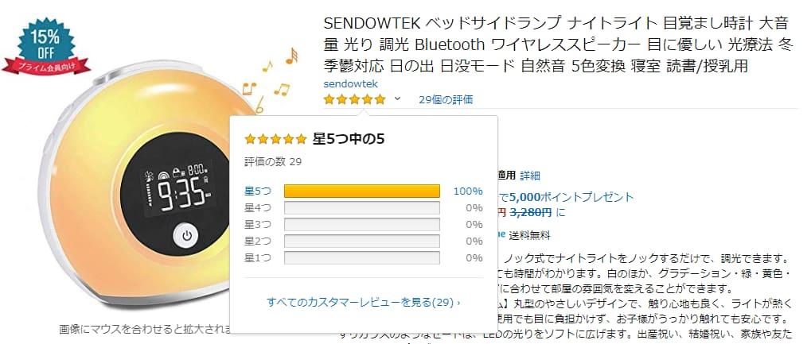
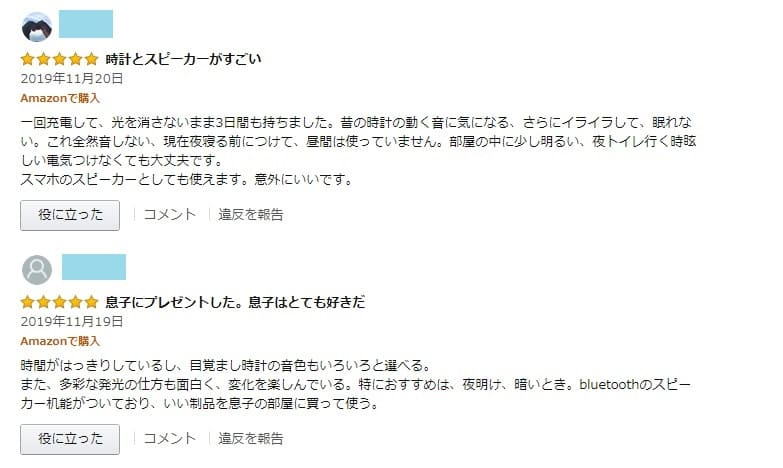
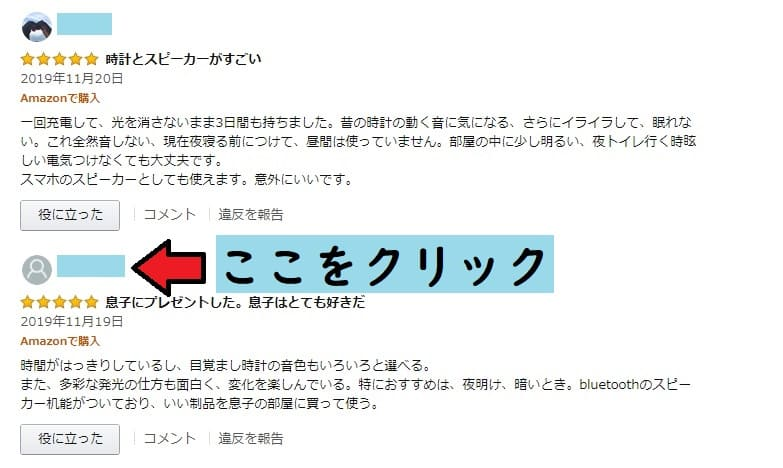
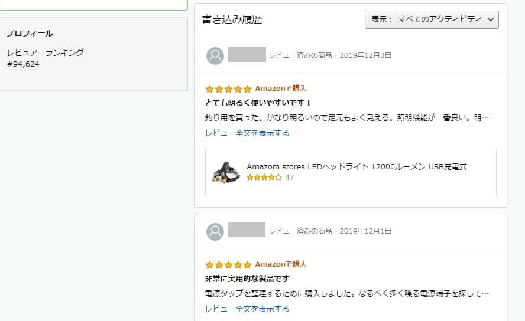
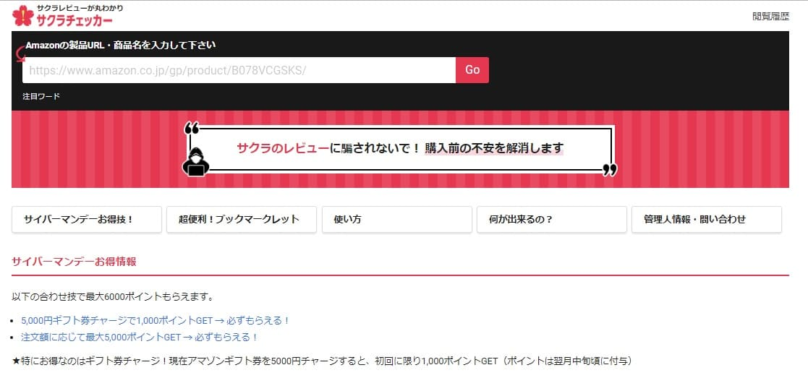
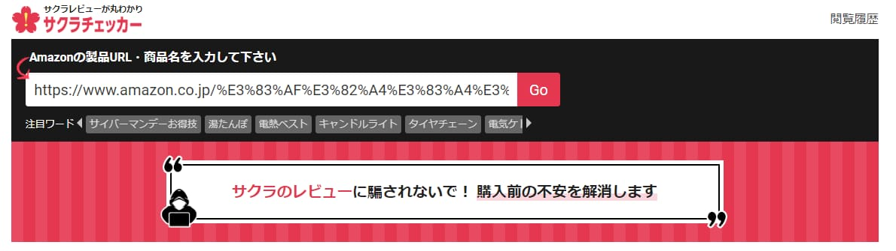
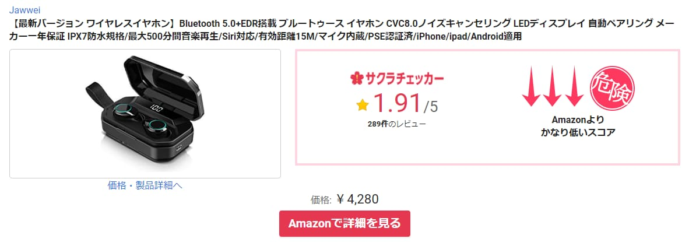
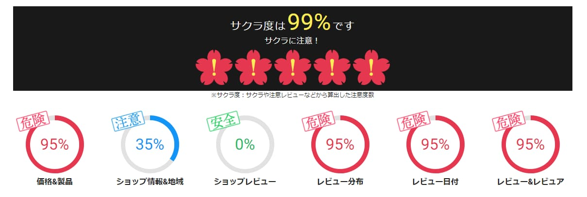
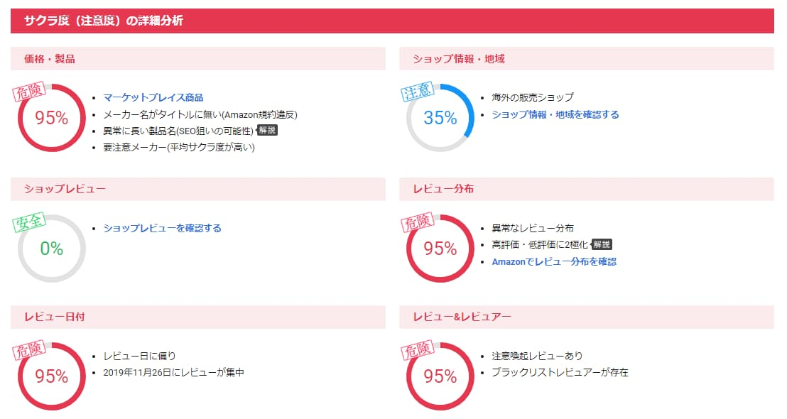

Amazonレビューのサクラや業者の見分け方２つ！これであなたは騙されない
Amazonのレビューって参考にしたいけどサクラが怖いですよね。
でも大丈夫。
今回ご紹介する見分け方を覚えれば、サクラに騙されることなくAmazonショッピングを楽しむことができちゃいます。
その方法はこちら。
- レビューしてる人の他のレビューを確認する
- サクラチェッカーを使う
詳しく見ていきますね。
レビューしてる人の他のレビューを確認する
１．評価の星５の割合を確認する
こちらの光る目覚まし時計。
２９個ある評価がすべて星５。

これは怪しい・・・・
評価がすべて星５は危ない！
２．実際の評価を見る
「昔の時計の動く音に気になる」
「息子にプレゼントした。息子はとても好きだ」
日本語がところどころおかしいですよね。
私ならこの時点で買うのをやめるかも（笑）
３．レビュー者の名前をクリックする
レビュー者の名前をクリックすると、他のレビューを見ることが出来るんです。

この人は３３個のレビューをつけていましたが全体的に日本語がおかしく、すべて星５の評価。
短期間に目覚まし時計を複数買っていたり、同じ用途の釣り用ライトを複数買っているなどとても不自然でした。
一見日本語に問題ない場合でも、他のレビューを見るとおかしい場合があるので購入前に一度チェックをおすすめしますよ。
サクラチェッカーを使う
レビューの怪しさを１～１００％で教えてくれるサイトです。
サクラチェッカー
登録とかも特に必要なく、サイトにアクセスして、

サクラを確認したいURLか商品名を入力して『GO』を押します。

すると危険度を出してくれます。
 
先ほどの時計の時に見つけたレビュー者が評価していたワイヤレススピーカー。
真っ黒ですね！
下のほうにスクロールすると詳細な分析結果もみれますよ。
今回は見るまでもないくらい酷いですが・・

Amazonレビューのサクラや業者の見分け方まとめ
サクラの見分け方について２通りの方法をご紹介しました。
- レビューしてる人の他のレビューを確認する
- サクラチェッカーを使う
この方法を活用して騙されることなく安心してAmazonショッピングが楽しめます。
素敵なAmazonライフを送ってください。
関連記事